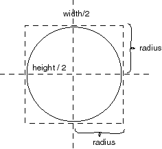

QUESTION 13:

Say that you want a circle of radius 50 centered on the point (100, 300).
What should the drawOval() command look like?
If the size of the applet's drawing area is 150 (width) by 150 (height), where is the center of that area?
The center is at (150/2 , 150/2)
What is the size ( width, height ) of the square that holds a circle with a radius of radius ?
The square is of size 2*radius by 2*radius.
|  |
To center the circle in the applet's area think in terms of the square that contains it. Put the square's center at the center of the drawing area. If the width and height of the drawing area is 150 by 150, then the square's upper left corner should be put at:
X = (150/2 - radius) Y = (150/2 - radius)
Similar calculations are needed to center other figures, or when you want to put a figure at some place other than the center of the drawing area.
Say that you want a circle of radius 50 centered on the point (100, 300).
What should the drawOval() command look like?